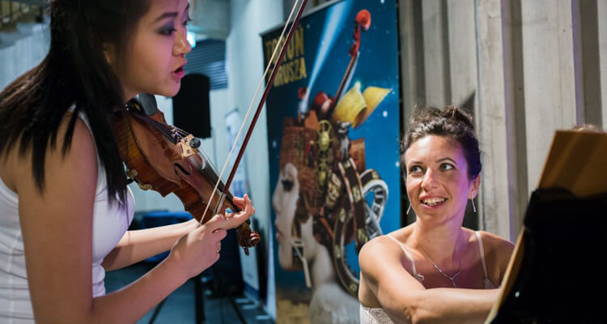
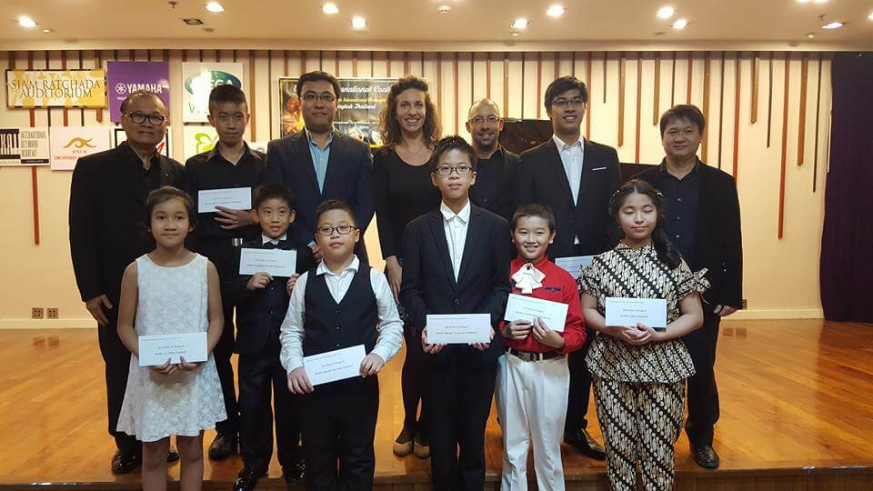
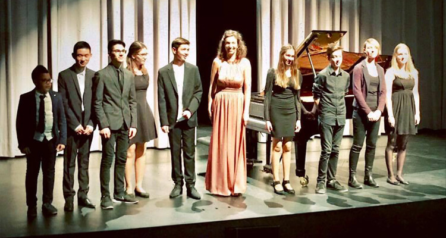

Kasia Wieczorek hat über die letzten Jahren einen Ruf als hervorragende Lehrerin und Klavierpartnerin erschaffen. Schon während des Studiums sammelte sie bei bedeutendsten Musikern unserer Zeit wichtige musikalische Impulse: Grace Bumbry, Edda Moser, Graham Johnson, Martin Katz, Wolfgang Böttcher, Wolfgang Emanuel Schmidt, David Geringas, Steven Isserlis, Sol Gabetta, Frans Helmerson, Boris Kuschnir, Julian Rachlin, Ana Chumachenko, Guy Braunstein, Nobuko Imai und anderen.
Kasia Wieczorek unterrichtet Meisterkurse an Universitäten in Asien (Hong Kong, Indonesien, Taiwan, Thailand), Australien (Brisbane, Melbourne) und in den USA (University of Notre Dame, Indiana, University of Nevada Las Vegas und University of Wosconsin).

Es folgten Lehraufträge in Hannover an der Hochschule für Musik, Theater und Medien, an der Musikhochschule Detmold und in der Folkwang Hochschule Essen. Heute ist Kasia in Frankfurt am Main als Korepetitorin und Kammermusiktutorin an der Hochschule für Musik und Darstellende Kunst. Sie wird als Klavierpartnerin regelmässig in die Kronberg Academy eingeladen. Sie unterrichtet Meisterkurse an Universitäten in Asien (Hong Kong, Indonesien, Taiwan, Thailand), Australien (Brisbane, Melbourne) und in den USA (University of Notre Dame, Indiana, University of Nevada Las Vegas und University of Wosconsin).
Heute ist Kasia Wieczorek in Frankfurt am Main als Korrepetitorin und Kammermusiktutorin an der Hochschule für Musik und Darstellende Kunst in Frankfurt am Main. Sie wird als Klavierpartnerin regelmässig in die Kronberg Academy eingeladen.
